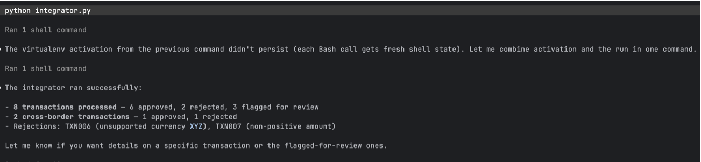
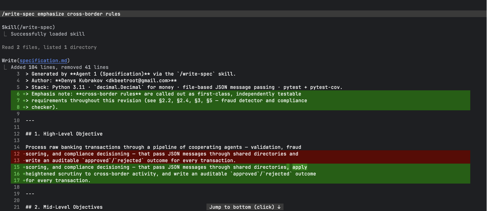
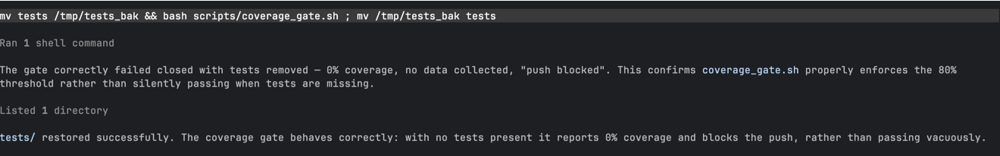
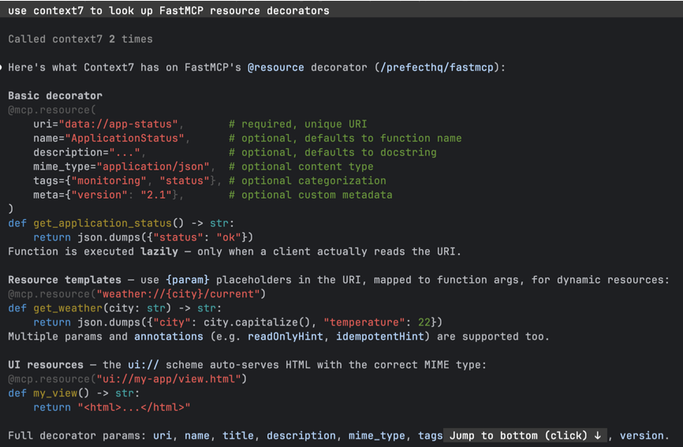
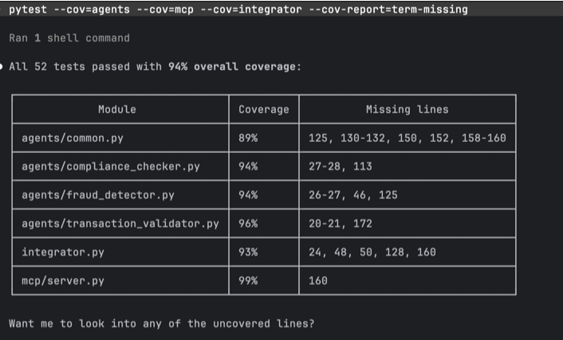

AI agents that build a system — and agents that run it.
Denys Kubrakov
Python 3.12 decimal.Decimal file-based JSON agents 2 × MCP 94% coverage
For every raw transaction a bank must decide, auditably and in order:
…without losing money to rounding, leaking account numbers, or dropping a record.
{
"transaction_id": "TXN005",
"amount": "75000.00",
"currency": "USD",
"source_account": "ACC-1005",
"timestamp": "2026-03-16T10:00:00Z",
"metadata": { "country": "US" }
}approve? · reject? · why?
A rejection short-circuits the rest — yet the transaction still lands in results/ with its reason. Queryable over MCP.
os.replace; no half-written readsdata block accumulates as it flows downstream{
"message_id": "uuid4…",
"timestamp": "2026-03-16T10:00:00Z",
"source_agent": "transaction_validator",
"target_agent": "fraud_detector",
"data": {
"transaction_id": "TXN001",
"amount": "1500.00", "currency": "USD",
"status": "validated",
"cross_border": false, "risk_score": 0
}
}| Agent | Decision | Rules it enforces |
|---|---|---|
| Validator | valid → fraud · else reject | required fields · positive Decimal · ISO-4217 whitelist · sets cross_border once |
| Fraud detector | risk score + review flags | +50 if > $10k · +20 off-hours (0–6h) · +20 cross-border · review at ≥ 50 |
| Compliance | approve / reject + reason | CTR flag ≥ $10k · cross-border EDD · sanctions screen · reject if risk ≥ 70 |
Cross-border risk lives in fields separate from domestic risk — a reviewer sees why a txn was flagged.
XYZ rejectedACC-1005 → ACC-**** before any log28 lines · 0 PII leaks · country = jurisdiction, safe to log

pipeline-run.png — TXN006 rejected (currency XYZ) · TXN007 rejected (amount ≤ 0, still logged) · click to enlarge
specification.md via /write-specSpec is authoritative — the code never invents rules.

/write-spec generating the specification
Three slash commands
Coverage gate — two layers, fail-closed
git push below 80%Verified: 99% threshold → blocked · normal command → allowed

hook-trigger.png — git push denied because coverage is below the threshold
context7 — docs used while coding
/python/cpython → Decimal quantize · ROUND_HALF_UP/prefecthq/fastmcp → v3 @mcp.tool stylepipeline-status — custom FastMCP
get_transaction_status(id)list_pipeline_results()pipeline://summaryPII-safe: whitelist projection — txn id + outcome only.

mcp-interaction.png — context7 lookup + a custom pipeline-status tool call · more in appendix
tmp_path
test-coverage.png — gate needs 80%, aim 90% — both cleared
shared//run-pipeline executesgithub.com/Denys-set/gen-ai-software-engineering · homework-6
Thank you — questions?
Press ↓ to page through the full evidence set. Every image opens full-size on click.
/run-pipeline skill executing